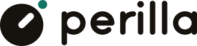
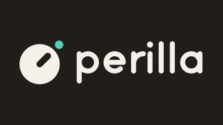
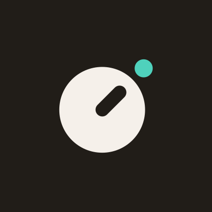

01 · Concepto y personalidad
Un giro y estás mirando
Durante décadas, en las casas argentinas se cambiaba de canal con la perilla de la tele: un giro y aparecía otra cosa. Perilla hace lo mismo con la TV abierta de hoy: canales gratuitos y legales, en la tele del living, con el control remoto y sin vueltas.
El símbolo es una perilla vista de frente. Su ranura apunta a un punto turquesa: el canal en el que estás. Ese turquesa es el mismo que marca el foco dentro de la app, así que la marca y la interfaz dicen lo mismo: “estás acá”. No usa antenas, ni el triángulo de reproducir, ni símbolos patrios.
De casa
Cálida y cercana, como el living un domingo. Los neutros tienen un tono tibio y nunca son grises de fábrica.
Clara
Se entiende desde el sillón, a tres metros. Formas llenas, trazos gruesos y nada que dependa de un detalle fino.
Honesta
Solo canales abiertos y legales. Si una señal no anda, lo dice y explica qué hacer. No promete lo que no tiene.
Liviana
Un solo color de acento, pocas palabras, sin adornos. La protagonista es la tele, no la app.
02 · El nombre
Perilla
Tres sílabas, pe-ri-lla, con la elle rioplatense. Es una palabra que todos conocen, que no se confunde al dictarla y que no necesita tilde ni eñe, así que se encuentra fácil con la búsqueda por voz del control remoto (“Abrí Perilla”) y con el teclado en pantalla.
En el texto corrido se escribe Perilla, con mayúscula inicial. El logotipo va siempre en minúsculas porque es un dibujo, no una palabra escrita. No uses “PERILLA”, “Perilla TV” ni diminutivos.
Las tres propuestas
Perilla. El gesto de cambiar de canal en la tele de casa. Nombra una acción, no una tecnología, y da un símbolo propio: la perilla que apunta al canal.
Verificación: Google Play (búsqueda en Argentina, 3/11/2026) no muestra apps llamadas Perilla; el resultado más cercano es “Perille”, una app de transporte de Finlandia.

Fogón. El lugar donde la familia se junta a contar historias; la tele del living es el fogón de hoy. Lleva tilde, que el teclado en pantalla obliga a buscar, y evoca más el asado que la TV.
Verificación: en Google Play no hay apps llamadas Fogón; los resultados son simuladores de chimenea.
Alaire. Contracción de “al aire”: en Argentina, a la televisión abierta se le dice “TV de aire”. El reconocimiento de voz lo transcribe como “al aire”, una frase muy común, y compite con radios y programas que la usan.
Verificación: en Google Play no hay apps llamadas Alaire.
Descartados en la búsqueda: “Aire Libre” (hay radios FM con ese nombre en Google Play), “Piola” (existe “Piola App”) y “Zapping” (ya es el nombre de un servicio de TV en vivo en Chile). La verificación se hizo solo en Google Play; el buscador web bloqueó la consulta automática. Antes de publicar, buscá el nombre en el registro de marcas del INPI (clases 9, 38 y 41) y en la App Store.
03 · El logo
Símbolo y logotipo
El logo une el símbolo (la perilla) y el logotipo (la palabra “perilla” dibujada a mano). Las dos piezas comparten la geometría: círculos, trazos parejos y terminaciones redondas. No requieren ninguna fuente para mostrarse: todo está dibujado con trazados en SVG.
Construcción
Todo se mide en unidades (u). El disco mide 76 u. La ranura tiene 12 u de ancho, nace en el centro y avanza 22 u a 45°. El punto mide 16 u y queda a 6 u del borde, sobre el mismo eje. Las piezas más finas miden 12 u, así que el símbolo se sigue leyendo a 24 px.
El logotipo no es una tipografía: no lo reescribas con Hanken Grotesk ni con otra fuente. La geometría completa está en source/logo_geometry.py, que regenera todos los SVG.
Versiones


Área de protección
Alrededor del logo dejá libre un espacio igual al radio del disco. Ningún texto, borde ni imagen entra en esa zona. En el símbolo solo se mide igual: el radio del disco hacia cada lado.
Tamaño mínimo
Por debajo de estos tamaños el punto y la ranura dejan de leerse. Para 16 px usá favicon.svg, que tiene la ranura y el punto agrandados.
Usos incorrectos
04 · Color
Neutros tibios y un solo turquesa
La paleta es la misma de la app. Los neutros tienen un tono tibio (alrededor de 60°) y cargan casi todo. El turquesa es el único color de acento: marca el foco, el punto del logo y la acción principal, y nunca ocupa más del 5 % de una pantalla. Para fondos claros se suma el turquesa hondo, porque el turquesa común da 1,66:1 sobre papel.
Contraste medido con la fórmula de WCAG 2.x (luminancia relativa). Mínimos: 4,5:1 para texto, 3:1 para texto grande, el logo y los bordes de controles. Los valores tachados no alcanzan 3:1.
n-0 · Fondo #16130F
Fondo de pantalla y del splash. Tinta del logo sobre claro.
- n-6 16,34:1
- blanco 18,52:1
n-1 · Superficie #211D18
Riel, mosaicos, fondo del ícono y del banner.
- n-6 14,79:1
- turquesa 8,92:1
n-2 · Superficie 2 #2D2822
Mosaicos alternos y paneles.
- n-6 12,89:1
- n-4 4,98:1
n-3 · Superficie 3 #3A342D
Superficie enfocada, separadores.
- n-6 10,85:1
- n-5 7,59:1
- n-4 4,19:1, solo texto grande
n-4 · Texto tenue #A0958A
Metadatos y textos secundarios.
- sobre n-0 6,31:1
- sobre n-1 5,71:1
- sobre n-6 2,59:1
n-5 · Texto #D3CABF
Cuerpo de texto.
- sobre n-0 11,44:1
- sobre n-2 9,02:1
n-6 · Tinta / papel #F5F0EA
Títulos, logo sobre oscuro y fondo claro (papel).
- sobre n-0 16,34:1
- sobre n-3 10,85:1
Turquesa #4FD1BC
Acento: foco, punto del logo, acción principal.
- sobre n-0 9,86:1
- sobre n-3 6,54:1
- sobre n-6 1,66:1
Turquesa hondo #117464
Acento sobre fondos claros. Nuevo de la marca.
- sobre n-6 5,00:1
- sobre blanco 5,67:1
- sobre n-0 3,27:1, no usar
Sobre turquesa #08201C
Texto e íconos encima del turquesa.
- sobre turquesa 9,06:1
Contraste del logo
| Versión | Pieza | Fondo | Contraste | Mínimo 3:1 |
|---|---|---|---|---|
| Horizontal, apilada, símbolo | Disco y logotipo n-6 | n-0 / n-1 / n-3 | 16,34 / 14,79 / 10,85:1 | Cumple |
| Horizontal, apilada, símbolo | Punto turquesa | n-0 / n-1 / n-3 | 9,86 / 8,92 / 6,54:1 | Cumple |
| Sobre fondo claro | Disco y logotipo n-0 | papel / blanco | 16,34 / 18,52:1 | Cumple |
| Sobre fondo claro | Punto turquesa hondo | papel / blanco | 5,00 / 5,67:1 | Cumple |
| Monocromo claro | Todo n-6 | n-0 / n-1 | 16,34 / 14,79:1 | Cumple |
| Monocromo oscuro | Todo n-0 | papel / blanco | 16,34 / 18,52:1 | Cumple |
| Ícono y banner | Disco n-6 · punto turquesa | n-1 | 14,79 · 8,92:1 | Cumple |
05 · Tipografía
Hanken Grotesk, en dos pesos
La app y todas las piezas usan Hanken Grotesk (Google Fonts, licencia SIL Open Font License) en Regular 400 y Bold 700. Es una grotesca de formas abiertas y redondas que acompaña la geometría del logotipo sin copiarla. Respaldo: system-ui, "Segoe UI", Roboto, sans-serif.
Aa Bb Cc Ññ Áá 0123456789 Aa Bb Cc Ññ Áá 0123456789
Jerarquía
Escala de razón 1,25 sobre una base de 1rem. La jerarquía se arma con tamaño y peso, nunca con cajas de color. En TV, ningún texto baja de --text-sm.
- Display3,052rem · 700 · −0,03em · 1,05
- Seguir viendo
- Título1,953rem · 700 · −0,02em · 1,3
- Todos los canales
- Subtítulo1,25rem · 700 · 1,3
- Lista de canales
- Cuerpo1rem · 400 · 1,55
- Horario parcial: puede que este canal no esté transmitiendo ahora.
- Detalle0,8rem · 400 · n-4
- Etiqueta0,8rem · 700 · +0,06em · mayúsculas
- Seguir viendo
- Reloj y números1,563rem · 700 · cifras tabulares
- 21:45
06 · Íconos y formas
Trazo de 2, puntas redondas
Los íconos se dibujan en una grilla de 24 × 24, con trazo de 2 u, puntas y uniones redondas y sin relleno. Es una sola familia en toda la app; no se mezclan íconos de otros juegos ni emojis.
- Inicio
- Buscar
- Favoritos
- Lista
- Categorías
Radios
El radio crece con el tamaño del elemento: 10 px para chips, teclas y botones; 16 px para mosaicos; 24 px para paneles.
El punto de sintonía
El círculo es la forma de la marca y se reserva para el símbolo. El único recurso que la app toma del logo es el punto turquesa, para marcar el canal que se está reproduciendo. Siempre va acompañado de texto, porque el color solo no alcanza para decirlo.
Reproduciendo ahora
07 · La marca en la app
Del riel al launcher
.brand__mark), a 2,2rem y sin caja. No es enfocable.app-icon-foreground.svg sobre #16130F.Banner de TV
Android TV y Google TV muestran un banner de 320 × 180 en la fila de apps. Lleva el logo horizontal sobre n-1, con la altura de x en 32 px: se lee desde el sillón y no tiene detalles finos.

Ícono en el launcher
El ícono adaptable se arma con dos capas de 432 × 432: app-icon-background.svg (n-1 liso) y app-icon-foreground.svg (el símbolo). El símbolo entra en el círculo seguro central de 264 px, así que sobrevive a cualquier máscara del launcher.

08 · Tono de voz
Como alguien de la casa que sabe de teles
Perilla habla en español de Argentina, con voseo y registro profesional: cercano pero sin lunfardo forzado. Dice lo justo para que alguien sentado a tres metros entienda qué pasa y qué hacer.
Hablá como en casa
Voseo, frases cortas, sin signos de exclamación ni emojis. “Cargá”, “Revisá”, “Volver a cargar”.
Decí qué pasó y qué hacer
Cada error nombra la causa y la salida. Nada de códigos sueltos ni “algo salió mal”.
Prometé solo lo que hay
Canales abiertos, gratuitos y legales. Nunca “todo”, “miles”, “premium” ni “fútbol en vivo”.
Escribí para tres metros
El verbo primero, la información importante adelante, mayúscula solo al inicio de la frase.
Así sí, así no
La columna “Así sí” usa textos reales de la interfaz.
| Situación | Así sí | Así no |
|---|---|---|
| Primera vez, sin lista | Cargá una lista para empezar a mirar | ¡Bienvenido! Configurá tu experiencia para disfrutar al máximo |
| Favoritos vacío | Todavía no tenés favoritos | No hay datos |
| La señal no carga | La señal no responde o el navegador no la admite. · Reintentar | ¡Ups! Algo salió mal |
| Bloqueo por región | Solo Argentina: esta señal se puede ver únicamente desde Argentina. | Contenido no disponible |
| Canal con horario | Horario parcial: puede que este canal no esté transmitiendo ahora. | Canal offline |
| Archivo equivocado | No se pudo cargar la lista · Revisá que el archivo sea una lista M3U. | Error: formato inválido |
| Búsqueda vacía | No se encontraron canales | 0 resultados |
| Cargando | Cargando canales… | Por favor espere mientras procesamos su solicitud |
| Ficha de la tienda | Canales gratuitos y legales de Argentina, en la tele del living. | ¡Miles de canales GRATIS! Todo el fútbol en vivo |
09 · Descargas
Archivos
Todos los archivos son SVG optimizados, sin fuentes ni imágenes incrustadas. Para Android, mirá README.md.
- logo-horizontal.svgPrincipal, fondos oscuros
- logo-horizontal-on-light.svgPrincipal, fondos claros
- logo-stacked.svgApilada, fondos oscuros
- mark.svgSímbolo solo
- mono-light.svgMonocromo claro, para fondos oscuros
- mono-dark.svgMonocromo oscuro, para fondos claros
- tv-banner.svgBanner de Android TV, 320 × 180
- app-icon.svgÍcono completo, 432 × 432

app-icon-foreground.svgCapa frontal del ícono adaptable
app-icon-background.svgCapa de fondo del ícono adaptable- favicon.svgPestaña del navegador, 16 a 64 px